PART 1: CONCEPTS
This chapter highlights the components and handling of the supplies that sterile compounding personnel use in their daily tasks. An understanding of the importance of choosing the correct item for the task at hand as well as the proper manipulation of that item in the cleanroom suite are critical steps in sterile compounding procedures.
5.2 Sterile Compounding Supplies
Common sterile compounding supplies include various sizes and types of needles, syringes, base solutions, and premixed parenteral products; medication containers such as vials and ampules; and miscellaneous items such as sterile 70% isopropyl alcohol (IPA) swabs; vented dispensing pins; tamper-evident, sterile, adhesive seals; and sharps containers. Familiarity with the design and function of each supply item is critical to its proper handling.
Needles
Needles are frequently used tools by sterile compounding personnel. A needle is attached to a syringe and is then used to either draw fluid into the syringe (also known as a straight draw) or push fluid out of the syringe and into an intravenous (IV) bag or bottle. Needles are available in many types, sizes, and lengths. Sterile compounding personnel select needles based on the specific tasks to be performed.
The length of the needle identifies the distance between the needle tip and needle hub. This measurement is an important consideration in the preparation of compounded sterile preparations (CSPs). For example, long needles are commonly used when injecting a sterile preparation into an IV bag with a long neck. However, a short needle is more appropriate when preparing a skin test for intradermal (ID) administration. Regular needles are commonly used to prepare CSPs and to withdraw or inject fluids for parenteral administration.
Specialty Needles
Other needles are used to perform specialized functions in a primary engineering control (PEC). A filter needle is a needle with a small, built-in filter (sometimes referred to as a depth filter) between the needle’s shaft and hub. A filter needle is used to remove particulate matter from a solution, such as glass shards that can enter a solution when the head of a glass ampule is snapped in order to access and withdraw its liquid contents with a needle-and-syringe unit. As the solution moves through the needle to the filter, the filter traps the particulate matter, thus removing any glass shards from the liquid medication. Because particulate matter is trapped in the needle’s filter, sterile compounding personnel must remove the filter needle and attach a new, regular needle before injecting the solution into a CSP. Failure to change the needle results in transferring the particulates into the CSP
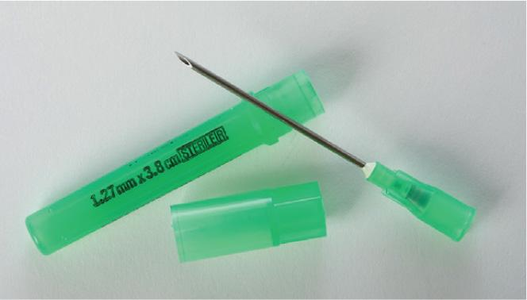
Sterile compounding personnel also frequently use vented needles and transfer needles. A vented needle is used primarily to reconstitute large-volume parenteral medications or multiple containers or vials of powdered medications. These powdered medications must be reconstituted prior to use. This type of needle is designed to allow the fluid to be injected into the powdered medication while simultaneously venting the positive-pressure air that has built up within the container or vial. A transfer needle transfers fluid from one vial or container to another. This type of needle is rarely necessary but is most often used when the entire volume of fluid in one vial must be transferred into another vial containing a powdered medication that is to be reconstituted for injectable use.
Syringes
Syringes also play a major role in the sterile compounding process. Sterile compounding personnel use syringes to withdraw or inject solutions as part of the preparation of almost all CSPs. Most syringes are made of polyvinyl chloride (PVC) or other plastic components and contain a rubber-tipped piston plunger that moves in and out along a sterile inner barrel. Several syringe sizes are commonly used during the preparation of CSPs, including 0.5 mL, 1 mL, 3 mL, 5 mL, 10 mL, 20 mL, 30 mL, and 50 mL. The size of the syringe indicates the maximum fluid volume it holds.
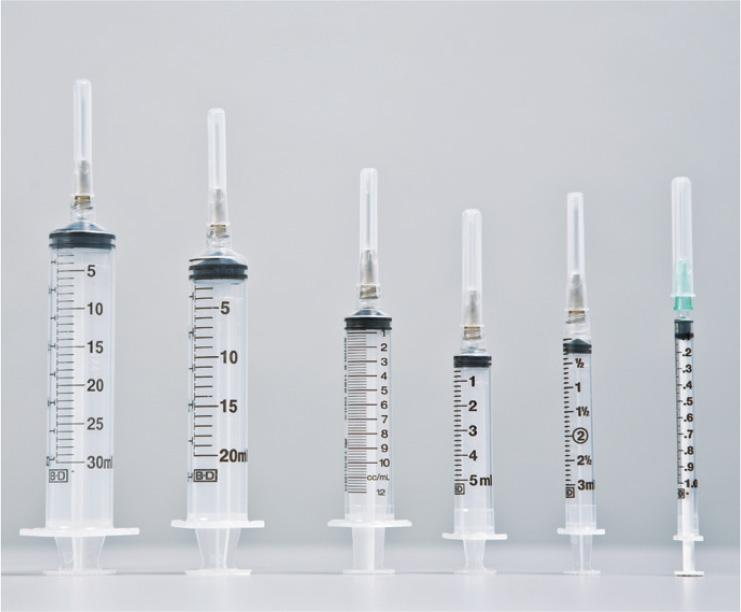
IV Base Solutions
An intravenous (IV) base solution—also referred to as a large-volume parenteral (LVP)—is a large volume (usually 500 mL or 1,000 mL) of sterile fluid that is delivered via sterile IV tubing to a patient. This IV base solution is administered over a period ranging from 1–24 hours. The container that holds the IV fluid may be made of polyethylene, PVC, polyolefin, various other plastics, or glass.
|
IV Base Solution |
Abbreviation |
|---|---|
|
Dextrose 5% in water |
D5W or D5W |
|
Dextrose 5% in 0.225% sodium chloride |
D5 1/4NS or D5 1/4NS |
|
Dextrose 5% in 0.33% sodium chloride |
D5 1/3NS or D5 1/3NS |
|
Dextrose 5% in 0.45% sodium chloride |
D5 ½NS or D5 1/2NS |
|
Dextrose 5% in 0.9% sodium chloride |
D5NS or D5NS |
|
0.9% Sodium chloride |
NS |
|
Lactated Ringer’s or Ringer’s Lactate |
LR or RL |
|
Dextrose 5% in Lactated Ringer’s or Ringer’s Lactate |
D5LR or D5RL or D5LR or D5RL |
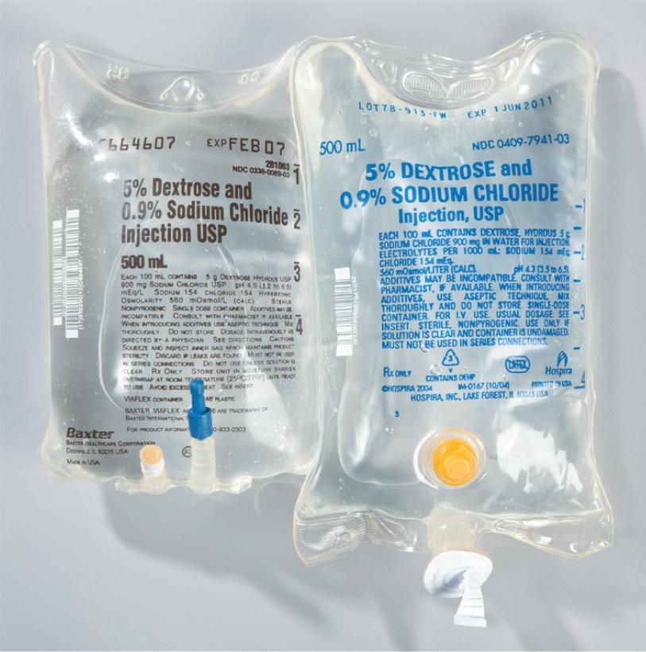
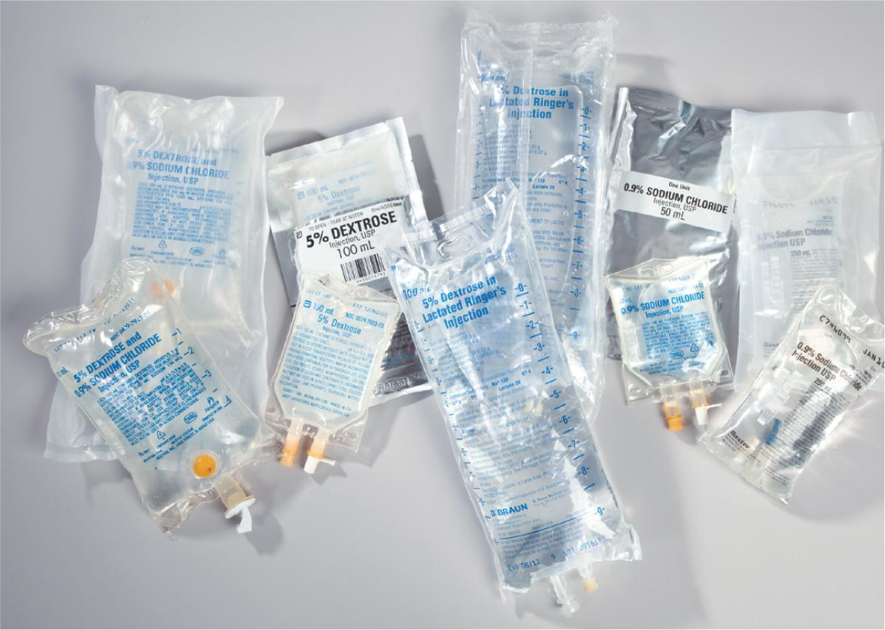
An LVP is typically the primary source of hydration for a patient and is run continuously while the patient is unable to take an adequate amount of oral liquids. Most LVP solutions are varying concentrations of sodium chloride (normal saline or NS) and/or dextrose (see Table 5.1). The most common IV base solutions are premade by their manufacturers. The pharmacy often keeps a supply of these solutions in each nursing unit for administration to patients needing immediate hydration. During the sterile compounding process, personnel prepare parenteral solutions for patients by injecting medication additives into the IV base solutions.
IVPB Base Solutions
An intravenous piggyback (IVPB) is a small volume (usually 25 mL, 50 mL, 100 mL, 150 mL, or 250 mL) of sterile fluid that is frequently mixed with an additive and administered to a patient via sterile IV tubing. IVPBs are a type of small-volume parenteral (SVP) preparation and are usually “piggybacked” through a primary IV line that contains an IV base solution (see Table 5.2). Nursing staff administer IVPB medications over a short period ranging from 10 minutes to several hours. The IVPB medication is administered to a patient intermittently, based on the frequency ordered by the prescriber. Many intravenously administered antibiotics are delivered via an IVPB.
| IVPB Base Solution | Abbreviation |
|---|---|
| 0.45% sodium chloride | 1/2NS |
| Dextrose 5% in water | D5W or D5W |
| 0.9% sodium chloride | NS |
| Dextrose 5% and 0.9% sodium chloride | D5NS |
Premixed Parenteral Products
Some medications for IV or IVPB administration are manufactured and supplied to the pharmacy in the form of premixed, shelf-stable products such as IV bags, IVPBs, bag-and-vial systems, or prefilled syringes.
Premixed IV Bags
Premixed intravenous (IV) bags contain solutions that are used to provide hydration and minerals, such as potassium chloride or sodium chloride. These premixed solutions also facilitate the immediate administration of critical care medications. One of the most commonly ordered premixed IV solutions is dextrose 5% in 0.45% sodium chloride with 20 milliequivalents (mEq) of potassium chloride per liter (D5½NS w/20 mEq KCl). This premixed parenteral solution is supplied as a shelf-stable product by the manufacturer.
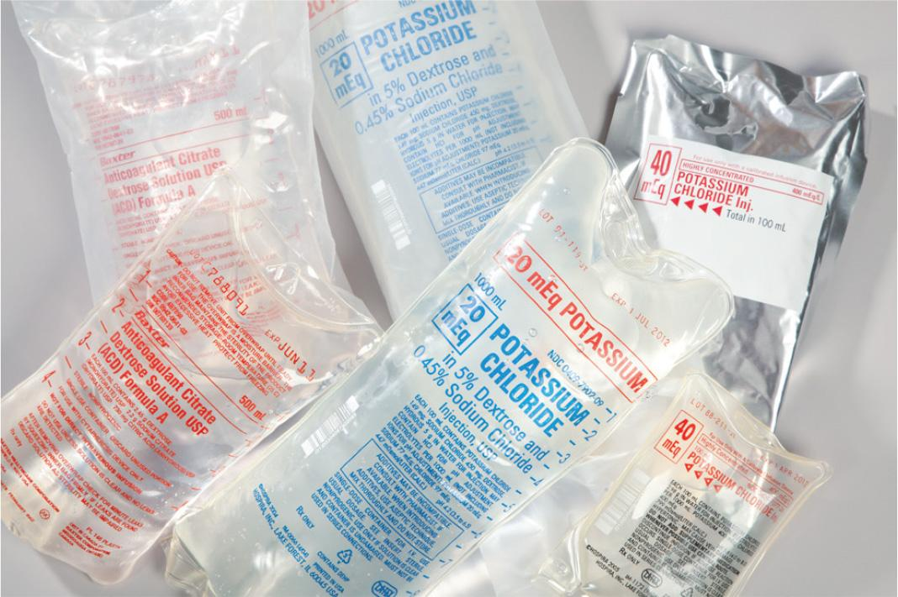
Premixed IVPBs
Many other premixed solutions are also available and widely used. Although some of these products are shelf-stable, others are kept frozen until ready for use. These products include various premixed intravenous piggybacks (IVPBs) that are supplied in packages of 6, 12, 24, or 48 and are shipped from the wholesale supplier in a container packed in dry ice. The pharmacy stores these products in a pharmacy freezer dedicated solely for this purpose. Sterile compounding personnel must determine the usage for all of the hospitalized patients and then remove the IVPBs from the freezer and place them in a designated thawing area in the pharmacy. Personnel typically thaw enough IVPBs to provide the necessary doses for all patients for 24 to 48 hours, based on usage. Busy hospitals may thaw a case or more of IVPBs at a time by moving the case(s) from the freezer to the refrigerator. Once personnel remove IVPBs from the freezer, they must label them with a beyond-use date (BUD) that does not exceed the date stated on the manufacturer’s labeling.
Bag-and-Vial Systems
Other products commonly used in sterile compounding procedures are proprietary bag-and-vial systems such as addEASE, ADD-Vantage, MINI-BAG Plus, and Add-A-Vial. These products require sterile compounding personnel to screw or snap a vial onto an IVPB designed for this type of attachment. This connection process, known as docking, must be performed in a PEC to maintain the sterility of the IVPB contents. The only exception to performing this connection process within a PEC is when the bag-and-vial system is for immediate administration to an individual patient. The device is then labeled, checked by a pharmacist, and sent to the nursing unit for activation or mixing prior to patient administration. (Chapter 6 of this textbook presents correct procedures for labeling and checking parenteral products.)
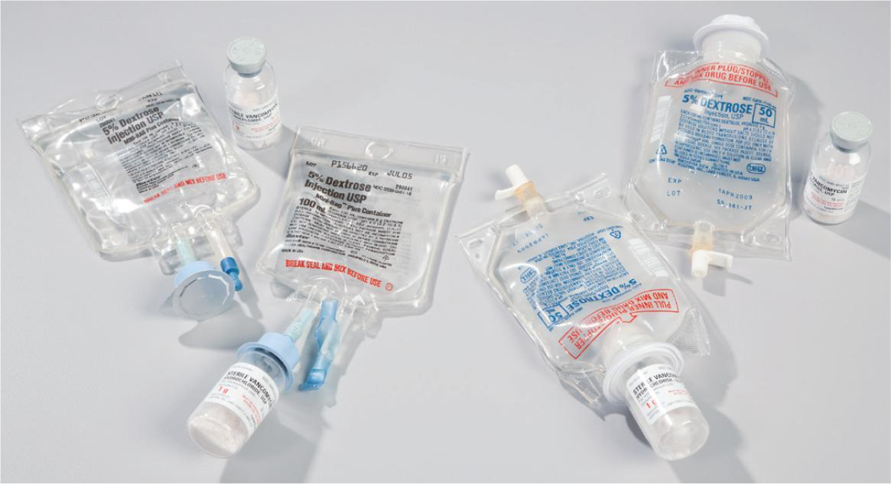
Just prior to administering a bag-and-vial system product, the nurse breaks a small, internal chamber located at the joint where the vial and IVPB bag are attached. This action opens the flow of fluid from the IVPB bag into the vial, which then allows the powdered medication in the vial to mix with the fluid of the IVPB bag. Once the medication is mixed into the IVPB fluid, the nurse uses sterile IV tubing to administer the medication to the patient.
One advantage of this type of IVPB is that it can be mixed just moments before the dose is required. This deferred mixing is helpful if the medication is not stable for long periods in its mixed form. Another advantage of the bag-and-vial system is that personnel may return unused doses of medication to the pharmacy, where they are often relabeled for use with other patients. Such reuse is possible because these systems are generally stable for up to 30 days, provided that the internal chamber has not been broken and that the drug has not been mixed into the IVPB bag. Using bag-and-vial systems helps to decrease the waste that would result from the relatively short stability of mixed IVPBs.
Prefilled Syringes
Parenteral medications provided as prefilled syringes for intravenous (IV) push contain the appropriate strength and amount of drug in a form that nursing personnel can immediately administer into IV tubing or into an IV bag. Many of these medications are emergency drugs such as lidocaine, epinephrine, or atropine.
A prefilled syringe is typically provided by a manufacturer in an individual dose, either in a ready-to-use form or as two parts that must be assembled. Some medications are packaged as a needle-and-syringe unit or as a needleless adapter-and-syringe unit and include a glass tube filled with medication. A nurse assembles the two pieces by screwing the medication-filled, glass tube onto the end of the syringe and then pushing the tube into the barrel of the syringe. To inject the medication, the nurse pushes the glass tube deeper into the syringe. This action forces the medication out of the syringe and through the needle.
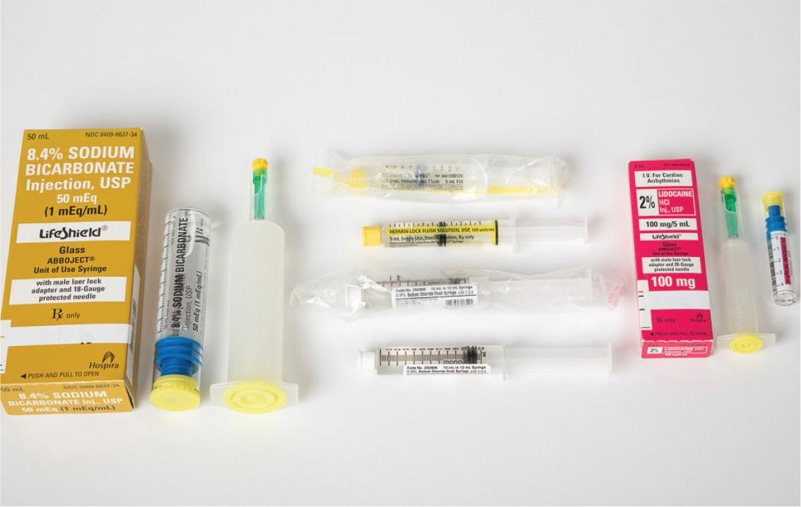
Vials
Vials are sealed, sterile containers made of plastic or glass, with a vial stopper, also known as the septa, through which sterile compounding personnel withdraw fluid. Vials often contain a sterile medication in a liquid or powdered form or a liquid diluent, which is used to reconstitute a powdered drug prior to injection. The most commonly used diluents are sterile water for injection (SWFI) and normal saline (NS). Medications from vials may be diluted by injecting them into an IV bag or an IVPB bag, or the drugs may be administered directly through IV push or another route of administration. The decision about how to dilute and administer a medication is made based on the prescriber’s order, the patient’s medical condition, information supplied by the drug’s manufacturer, and the compounding facility’s standard operating procedures (SOPs).
Single-Dose and Multiple-Dose Containers
Single-dose containers may include vials, ampules, and medication-filled syringes. Medications in single-dose containers typically do not contain a preservative. For that reason, single-dose containers provide an ideal medium for the growth of microorganisms. Therefore, this type of container is meant for one-time use only and should be discarded after puncturing the septa, or otherwise opening the container and using the contents. However, if a single-dose container is entered or punctured in an ISO Class 5 PEC, it may be used for up to 12 hours.
The contents of multiple-dose containers typically contain a preservative, such as benzyl alcohol or methylparaben, to inhibit bacterial growth. Other multiple-dose containers hold contents that have self-preservation formulations. Once opened, the contents of multiple-dose containers may be reused for up to 28 days or according to the manufacturers’ instructions.
Mix-O-Vial
Another type of vial, called a Mix-O-Vial (also known as an Act-O-Vial), is used infrequently by sterile compounding personnel due to the limited number of immediate-use medications supplied in this type of container. However, the vial’s hourglass design makes it an easy tool for personnel to use when necessary. The upper chamber contains a diluent such as sterile water; the lower chamber contains a drug in powdered form. A rubber plug separates the two chambers. To prepare the CSP, personnel activate the medication by pressing down on a raised rubber stopper located at the top of the upper chamber. This action creates pressure that forces the rubber plug separating the chambers downward into the powder. Dislocating the plug releases the liquid into the powder, which dissolves and is then drawn up in solution for either IV push or IVPB administration to a patient.
Ampules
An ampule is a sterile, sealed, glass container of medication. To access the medication contained within an ampule, sterile compounding personnel break the glass at its tapered, scored neck and aseptically remove the liquid contents using a needle-and-syringe unit. An ampule is an appropriate container for a drug that is not compatible with the vial stopper or another vial component. Working with ampules requires specialized techniques, which Chapter 12 of this textbook covers in detail.
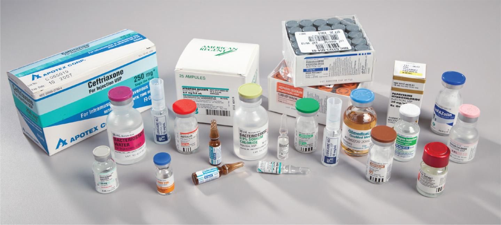
The medication contained in an ampule may be diluted by injecting the fluid into an IV bag or an IVPB bag, or the drug may be administered directly through IV push or via another route of administration, such as intramuscular (IM), intradermal (ID), or subcutaneous (subcut) injections. Sterile compounding personnel decide how to dilute and administer a medication based on the prescriber’s order, the patient’s medical condition, information supplied by the drug’s manufacturer, and the compounding facility’s SOPs.
Commonly Used Sterile Compounding Supplies
Many supplies are used on a frequent basis in the preparation of CSPs. Such items include low-lint wipers; sterile 70% IPA swabs; vented dispensing pins; tamper-evident, sterile, adhesive seals; and sharps containers.
Low-Lint Wipers
Low-lint wipers are used to apply sterile 70% IPA or disinfectant to the exterior surfaces of supply items and surfaces within a cleanroom suite for the purpose of cleaning and disinfecting them. They are also often used for drying hands after hand washing in the anteroom and for applying sterile, 70% IPA to gloves. Wipers must be low-lint, so particles are not shed into the air during the cleaning process, which could potentially compromise air quality. Low-lint wipers used within the PEC or used to wipe items introduced directly into the PEC must also be sterile.
Sterile 70% IPA Swabs
Sterile 70% isopropyl alcohol (IPA) swabs—commonly referred to as alcohol swabs, IPA swabs, or, simply, swabs—are wiped across the critical sites of some supply items prior to sterile compounding. Critical sites include any fluid pathway surfaces or openings that are exposed to air and, therefore, are at risk for touch contamination or for airflow interruption from the high-efficiency particulate air (HEPA) filter of the laminar airflow workbench. Examples of critical sites include the vial stopper, ampule neck, and injection port of an IV or IVPB bag. Wiping with sterile 70% IPA acts by both mechanical and chemical means to remove surface contamination and helps to ensure that the solution within the container remains sterile. The sterile 70% IPA must be allowed to dry thoroughly before using the supply item.
Sterile compounding personnel must ensure that the sterile 70% IPA swab is completely saturated and has not dried out due to a hole or tear in the packaging. A dry or semidry IPA swab within an opened package must be discarded.
Vented Dispensing Pins
A vented dispensing pin is inserted into a vial or a glass bottle and then attached to a syringe. This type of pin allows easy withdrawal of a large volume of fluid while equalizing the pressure within the container. A manufacturer’s package may provide a vented dispensing pin in which both of the critical sites—the syringe adapter and the spike—are completely sterile, provided that they are handled aseptically. The sterile nature of the critical sites of the vented dispensing pin requires that the sites never be touched or swabbed with sterile 70% IPA before use.
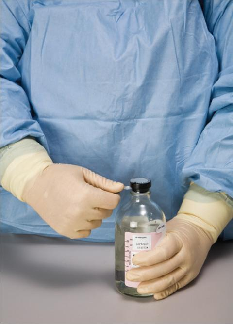
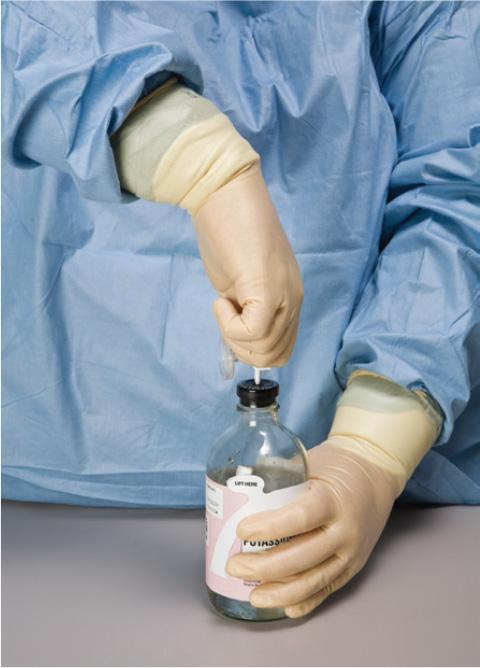
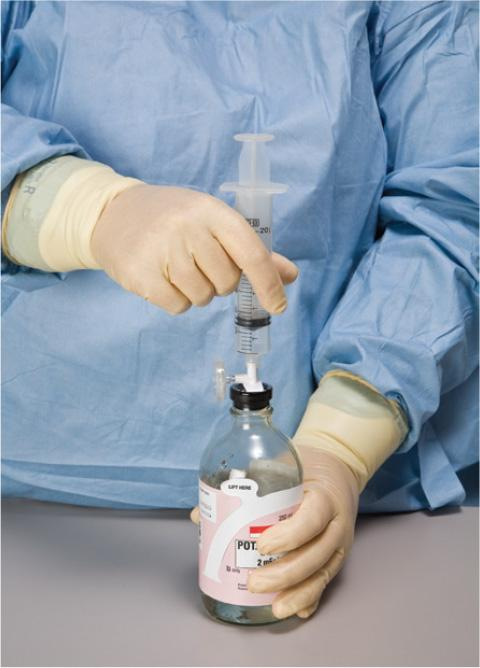
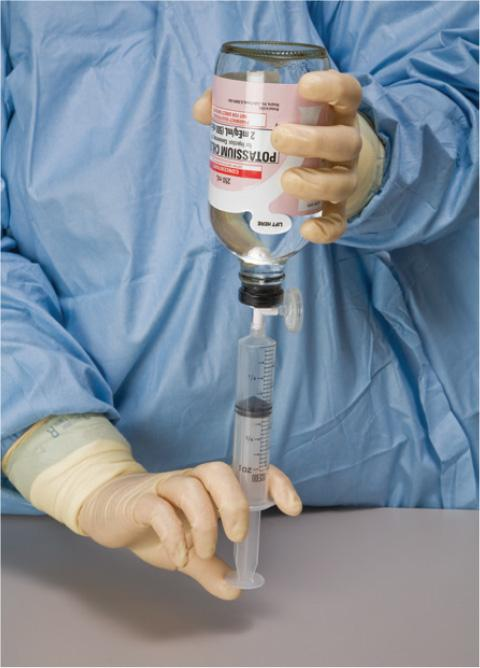
Tamper-Evident, Sterile, Adhesive Seals
Tamper-evident, sterile, adhesive seals are small foil stickers that sterile compounding personnel place over the injection port of a prepared IV bag, IVPB bag, or other CSP. These sterile seals protect the injection port of a parenteral preparation and are designed to indicate previous needle puncture, which helps avoid accidental double-dosing. In addition, the seals self-destruct upon attempted removal, providing evidence of tampering.
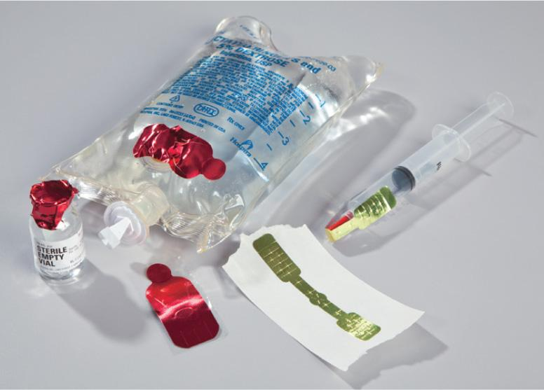
Sharps Containers
A sharps container is a large bucket, typically red in color, made of thick plastic and used to safely dispose of used needles, syringes, and broken glass. Its puncture-resistant design and small opening at the top of the container prevent pharmacy personnel, as well as other individuals, from reaching inside and accidentally injuring themselves from contact with the contents. Once the container is full, sterile compounding personnel place a lid on the top of the container. This lid is designed with a self-locking mechanism, a safety feature that prevents the lid from being opened after it is secured.
Sterile IV Tubing
Sterile IV tubing is a supply item frequently used in a hospital. There are two types of sterile IV tubing: primary IV tubing and secondary IV tubing. Although there are slight differences between the two types, the important components of the IV tubing are the same.
Primary IV tubing is sterile IV tubing with multiple injection ports. Nursing personnel use primary IV tubing to administer an IV base solution to a patient. They also inject medications by IV push or IVPB through the injection ports of the IV tubing.
Secondary IV tubing is short, sterile IV tubing that may or may not have an injection port. Sterile compounding personnel use secondary IV tubing to transfer a solution from a source container to another bag or bottle. Nursing personnel use secondary IV tubing to piggyback an IVPB medication through the primary IV line and into a patient’s vein.
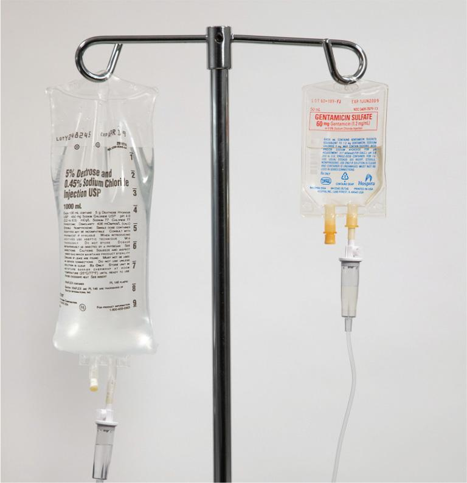
Sterile compounding personnel control the flow rate of the IV solution by manipulating the clamp on the tubing. A clamp that is completely closed does not allow any fluid to flow from an IV bag into a patient; a clamp that is wide open provides no constriction upon the IV line and therefore allows the fastest possible flow rate of solution to a patient. Nursing personnel often use electronic IV pumps to control the flow rate of an IV solution. To use these pumps, personnel place the IV tubing inside of the pump and then program the pump to deliver the prescribed amount of fluid to a patient. Electronic IV pumps are widely used in nursing but are rarely used in sterile compounding.
Repeater Pumps
Some sterile compounding facilities use repeater pumps to rapidly transfer sterile fluids from large-volume or bulk containers into small-volume containers such as syringes or vials. When sterile compounding personnel must prepare large batches of fluid-filled syringes of the same volume, a repeater pump is an excellent alternative to manually filling syringes from a bulk container. This electronic pump is calibrated to accurately and rapidly transfer a volume of fluid between 0.2 mL and 999 mL at approximately 13.5 mL per second. In addition to batch preparation of syringes, personnel can use the repeater pump to dilute multiple vials of powdered medications. The speed and accuracy of the repeater pump make it a valuable tool for sterile compounding personnel.
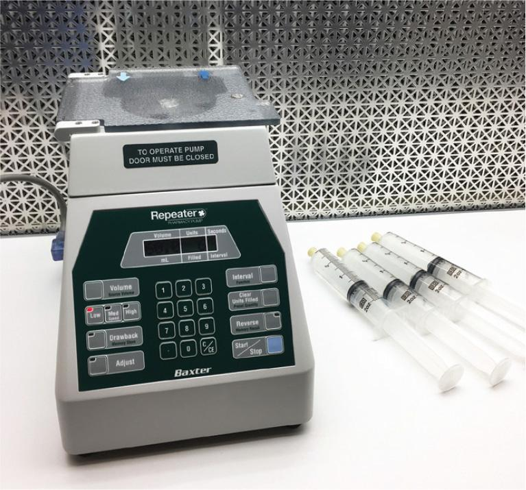
Miscellaneous Sterile Compounding Supplies
Other supplies used in sterile compounding procedures include syringe caps, Luer-to-Luer connectors, membrane filters, and empty evacuated containers. Sterile compounding personnel must also be familiar with the appearance and purpose of these supply items if a procedure requires their use.
Syringe Caps
A syringe cap is a small, plastic cap that attaches to the tip of a filled syringe. The placement of a syringe cap rather than a capped needle is a precaution that allows the safe transport of the filled syringe to the nursing unit. Once the filled syringe arrives on the unit, a nurse then removes the syringe cap and attaches a capped needle or a needleless adapter to the syringe just prior to the administration of medication to the patient.
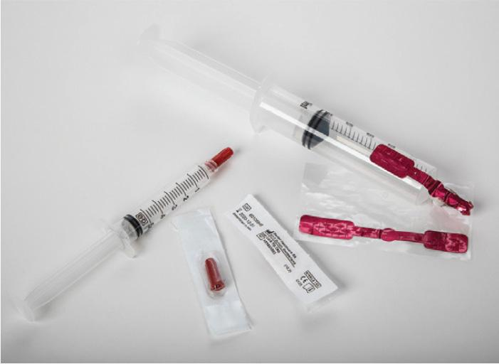
Luer-to-Luer Connectors
A Luer-to-Luer connector is a sterile, plastic tube with Luer-lock hubs at both ends. This needleless system is used to transfer liquid from one syringe to another during certain sterile compounding procedures.
Membrane Filters
Membrane filters (0.2 micron or smaller) are used to sterilize solutions that have been prepared using nonsterile ingredients. This type of filter is attached to the tip of a syringe containing the nonsterile fluid. A needle is attached to the other side of the filter, and the fluid is pushed through the sterilizing filter and into a receptacle such as an empty evacuated container. Membrane filters used to sterilize CSPs must be tested for integrity to ensure that the filters function properly.
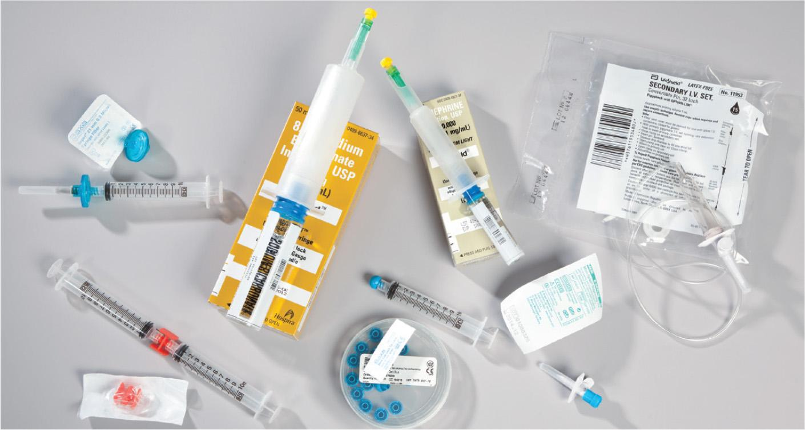
Empty Evacuated Containers
An empty evacuated container (EEC) is a sterile, empty vial or bottle whose volume ranges from 1 mL up to 1 liter or more. EECs have a variety of purposes in sterile compounding: They can be used when transferring solutions from one container to another, when creating an IV base solution from scratch if the solution is not commercially available, or when administering an IV solution to a patient who is allergic to one of the plastic components of an IV bag.